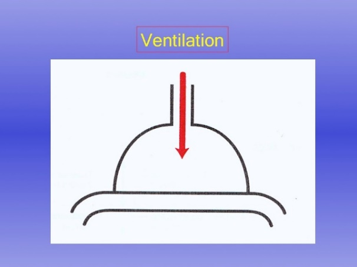
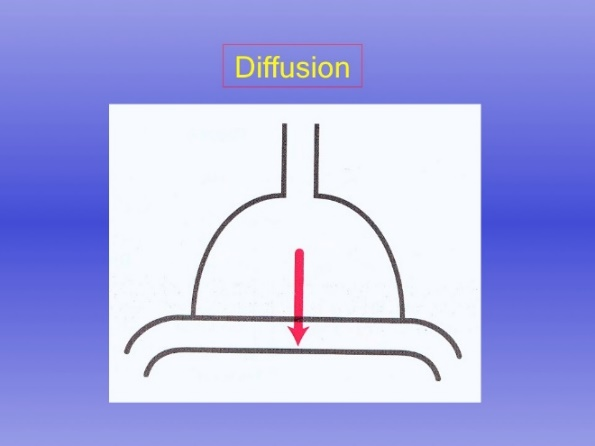
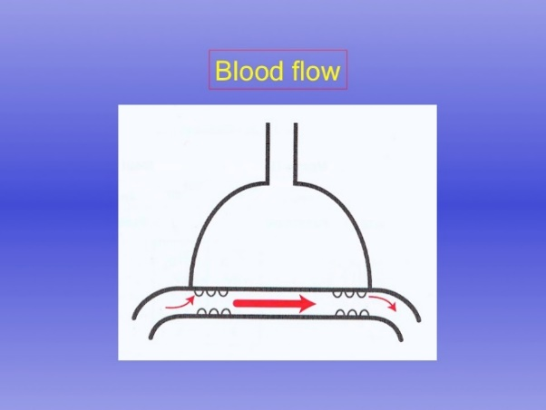

Lecture Outline
1.
Introduction to respiratory system
2.
Physical aspects and mechanics of ventilation
3.
Factors affecting ventilation
4.
O
2
& CO
2
transport
5.
Acid-base balance
6. Regulation of breathing
